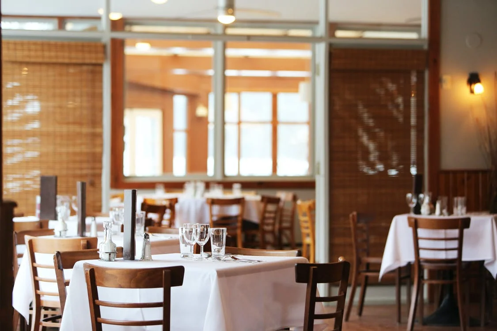
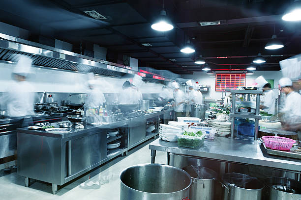
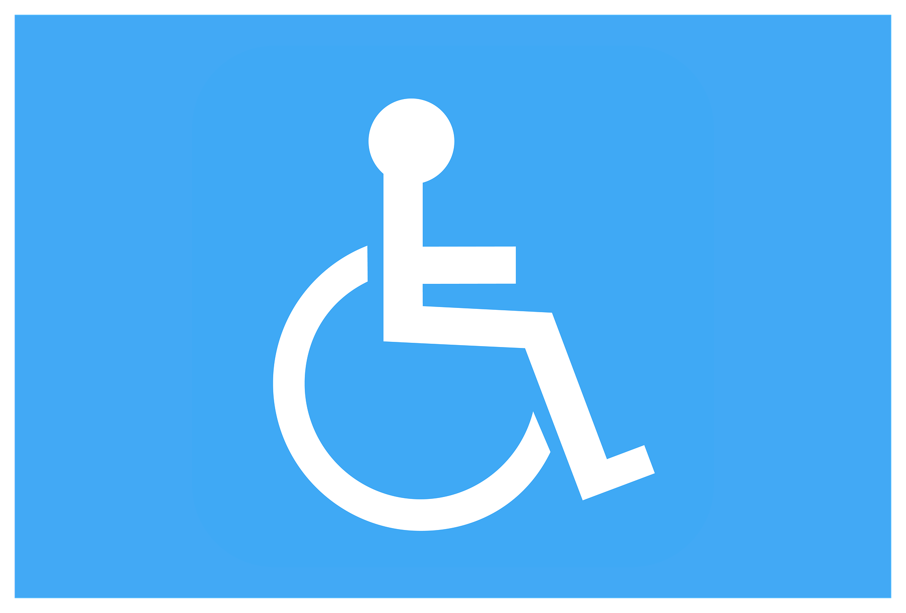

En la parrilla tenemos mesas de varios tamaños. Desde 2 personas hasta 8. Aparte de los camareros disponibles en todo momento para lo que sea que se los necesite.
Ya una vez dentro de la cocina podemos encontrar a un selecto grupo de experimentados cocineros. Siendo la mayoría de estos gente que ya tiene años trabajando en el rubro.
Cabe destacar también que todo el lugar esta apto para personas con movilidad reducida.


